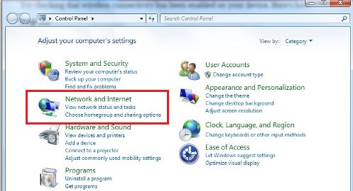
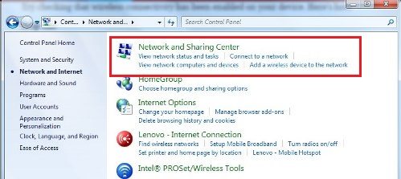
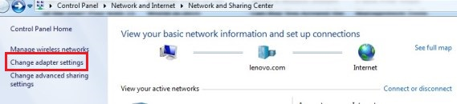
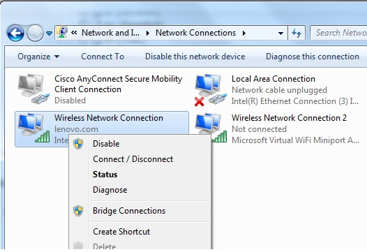

Section 3 Scan Protocol - 7T
3.1 Pre-Scan
3.1.1 ASAP
- Send participant COVID risk form
- Send participant information sheet
- Send participant consent/assent forms
- Call participant for MRI safety screening (WBIC form)
- Schedule tentative date for scan
3.1.2 1 Week Prior
- Send WBIC the completed COVID risk form
- Send WBIC the completed MRI safety screening (WBIC form)
- Book scan session with WBIC (bookings@wbic.acm.ac.uk)
- Schedule participant COVID safety screening call (must be 48 hrs prior to scan)
3.1.3 48 Hours Prior
- Call participant for COVID safety screening
- Make sure Teams App on phone and shift assigned for WBIC
3.1.4 Night Before
- Charge laptop
- Plan to arrive 20 minutes early
- Email participant reminder to arrive 15 minutes early
3.2 Scan
3.2.1 On Arrival
- Send message in teams COVID-19 channel “I’m here”
- Tell receptionist you are scanning on 7T with your assigned Radiographer (Tracy)
- Find place in lobby to sit
- Have participant fill out MRI safety screening (again)
- Load task on laptop (disinfect laptop - COVID protocol)
- Password - frith3
- Disabling WiFi on Windows
- Close all applications
- Run practice task (approximately 5 minutes duration)
- Open MatLab
- Set current directory as task directory
- Type MID_v9 and hit “Enter”
- Type participant id - pilot_02
- Type “0” to run practice
3.2.2 Practice Task Instructions
- Explain task
In this task, you are playing for real money! Your goal is to make as much money as possible! Each trial will begin with a cross. You will then see a star with a number inside. The number inside the star indicates how much money you can earn or lose on each trial. After each star you will see a white circle - followed by a white square. Your job is to respond to the white square by pressing the button as quickly as possible.
If you press the button quick enough on a win trial, you will win the amount in the star. If you press the button quick enough on a lose trial, you will avoid losing the amount in the star. Your earnings and losses will add up and you are playing for real money - so be sure to pay close attention and press the button as quickly as you can when you see the white square.
- Have participant explain task back to you
3.2.3 Scan Setup
- Radiographer will assist participant into scanner
- Explain emergency squeeze ball, hearing protection, talking between each run
- Explain staying VERY STILL - even small movements will cause distortions
- Using button box to respond to task (press #1)
- Connect laptop
- To projector
- To trigger
- Plug in to power outlet
- Setup task (should be setup from practice run)
- If Cat not present, tell radiographer to cut one DTI sequence (keep the MB2_iPAT2)
3.2.4 Scanning
- Scan sequences are saved in protocol at WBIC
- Radiographer or researcher to check in with participant after each run
- Anatomical scans first
- Functional scans
- Type MID_v9 and hit “Enter”
- Type participant id - pilot_02
- Type “1” to run first run
- When complete run other 3 runs (#2-4)
3.3 Post Scan
- Ask pilot participant (make notes)
- Was there anything they did not understand?
- Was there anything strange or different than expected?
- How were the timings? Were they fast, but long enough to understand?
3.3.1 On Exit
- Send message in teams COVID-19 channel “I’m leaving”
- Backup behavioral data
- Livia to download scan data from cluster
3.4 Troubleshooting
For help/advice please do not hesitate to contact the WBIC Radiographers wbic-radiog@lists.cam.ac.uk.
3.4.1 Disabling WiFi on Windows
- Go to the Start Menu and select Control Panel
- Click the Network And Internet category
 - Select Networking and Sharing Center
 - From the options on the left-hand side, select Change adapter settings
 - Right click on Wireless Network Connection
 - Select “Disable”
3.4.2 Finding the WBIC
- Google WBIC and follow maps
- There will be a roundabout near the hospital
- Entrance to WBIC is at end of the street past the hospital